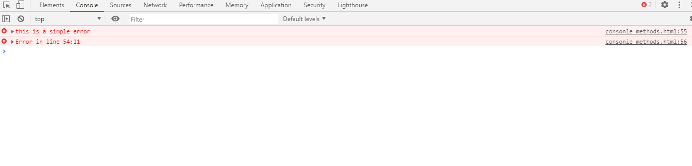
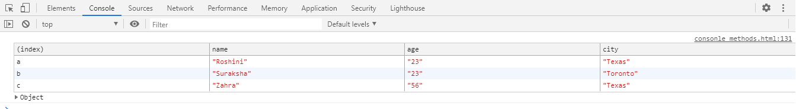

The console object provides access to Browser's debugging console. It can be accessed from any global object. It is used for debugging, testing, to check code, or perform any calculations(can be done in any of the browser's debugging console) etc.
console.log is mainly used to log(print) the outpu to the console.
We can put any type inside log() i.e.
string,object, array boolean etc
var a = 12;
var b = 13;
var c = a + b;
console.log(c);
var fruits = ["apple", "mango", "banana"];
console.log(fruits);
console.error is used to log error message to the console. Useful in testing of code. By default the
error message will be highlighted with red colour
ex : console.error('this is a simple error');
console.error("Error in line 54:11");

console.warn is used to log warning message to the console. By default the warning message will be highlighted
with yellow color.
example of console.warn() method:
console.warn('This is a warning.');
console.warn("Warning !!");
console.clear is used to clear the console. The console will be cleared, in case of Chrome a simple overlayed text will be printed like : ‘Console was cleared’ while in firefox no message is returned.
time() and timeEnd() methods are provided by the javascript console object.
It shows us the amount
of time
spent by a block or a function.
You can start a timer to calculate the duration of a specific operation. To start one, you need to call the
console.time() method.
To stop the timer, and to get the elapsed time in milliseconds, you need to call the console.timeEnd() method.
It can run upto 10,000 times simultaneously on a given page
Example of console.time() and console.timeEnd() method
console.time("answer time");
alert("Click to continue");
alert("Do a bunch of other stuff");
console.timeEnd("answer time");
It logs the user time to dismiss the alert box.
This method allows us to generate a table inside a console. The input must be an array or an object which will
be
shown as a table.
Example :
var a = {
name: "Roshini",
age:"23",
city: "Texas"
};
var b = {
name: "Suraksha",
age:"23",
city: "Toronto"
};
var c = {
name: "Zahra",
age:"56",
city: "Texas"
};
console.table({a,b,c});

This method outputs the number of times it has been called with that label. If omitted, it behaves as though it was called with the "defualt" label.
example :